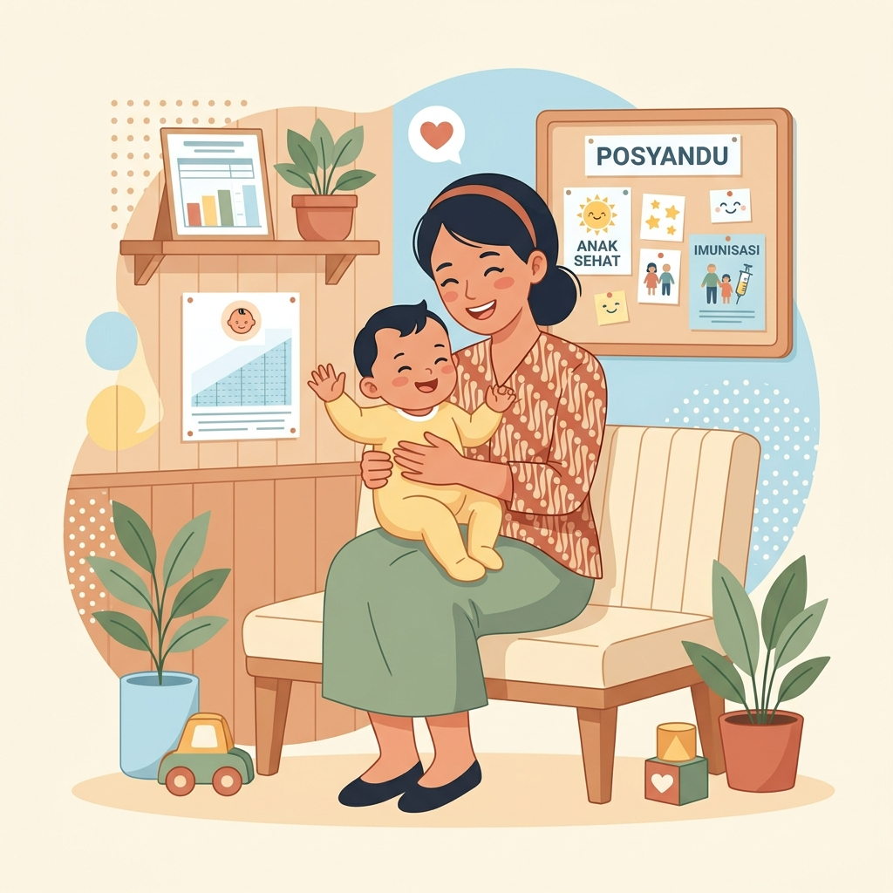
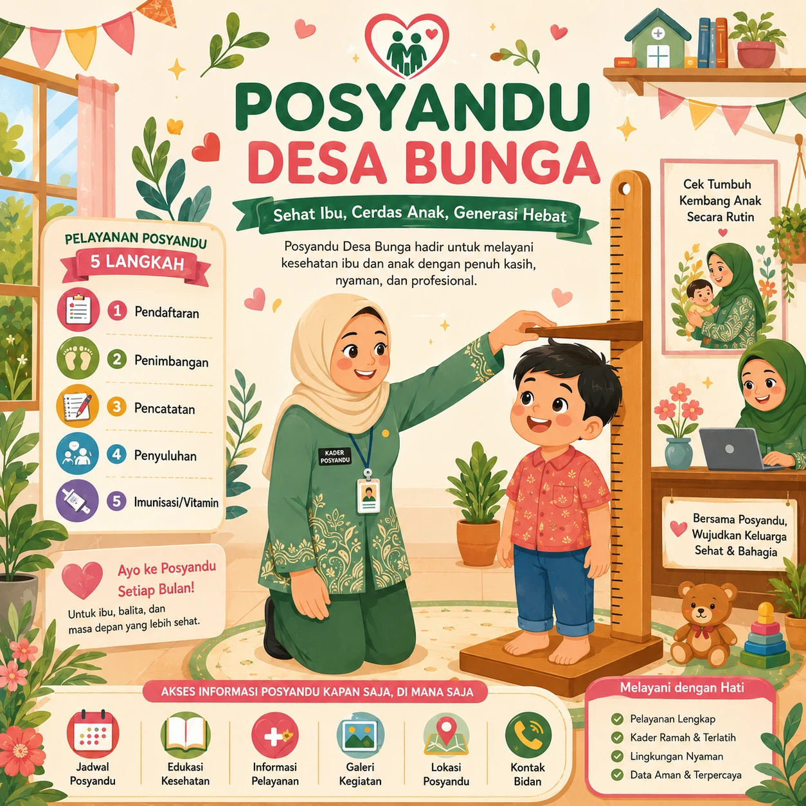

Kesehatan Ibu & Anak
Pemantauan kesehatan berkala bagi ibu hamil, ibu nifas, menyusui, serta pemeriksaan bayi lahir secara teratur.
Selamat datang di Posyandu Desa Bunga. Kami berkomitmen untuk mendampingi ibu hamil dan menjaga tumbuh kembang balita dengan penuh kehangatan, kenyamanan, dan pelayanan kesehatan terpadu berbasis digital.

Pemantauan kesehatan berkala bagi ibu hamil, ibu nifas, menyusui, serta pemeriksaan bayi lahir secara teratur.
Pemeriksaan berat badan, tinggi badan, dan lingkar kepala berkala untuk mendeteksi serta mencegah stunting sejak dini.
Pemberian imunisasi dasar lengkap, kapsul Vitamin A merah & biru, serta obat cacing gratis untuk kekebalan tubuh balita.
Konseling gizi seimbang, kelas pola asuh (parenting), penyuluhan ASI eksklusif, serta Pemberian Makanan Tambahan (PMT).

"Setiap anak tumbuh dengan keistimewaannya sendiri. Bersama kita jaga nutrisi dan masa depan mereka."
Posyandu Desa Bunga menaungi dua lokasi pelayanan, yaitu Posyandu Cut Mutia di Dusun Banga-Banga dan Posyandu Emisaelan di Dusun Labumpung. Keduanya berkomitmen penuh untuk mengawal kesehatan ibu hamil, ibu menyusui, serta mendukung tumbuh kembang anak sejak usia dini. Didukung oleh kader terlatih, bidan desa yang siap sedia, serta sistem administrasi posyandu digital yang modern dan transparan, kami percaya pelayanan ramah anak dapat mewujudkan masa depan anak yang cerdas dan bebas dari risiko stunting.
Struktur kelompok kegiatan (Poktan) binaan BKKBN di Desa Bunga, Kecamatan Mattiro Bulu, Kabupaten Pinrang — mencakup BKB Cinta, BKR Kasih, BKL Sipatuo, PPKBD, lengkap dengan data kependudukan dan KB Dusun Banga-Banga & Dusun Labumpung.
| No | Poktan | Jumlah | SK |
|---|
Klik salah satu poktan untuk melihat struktur kepengurusannya ↓
Kader dan pengurus aktif kelompok kegiatan (Poktan) binaan Posyandu Desa Bunga di Dusun Banga-Banga dan Dusun Labumpung.
| Dusun | Jumlah KK | Jumlah Jiwa | PUS | WUS | Mix Kontrasepsi | ||||||||
|---|---|---|---|---|---|---|---|---|---|---|---|---|---|
| LK | PR | LK | PR | PIL | STK | IMP | IUD | MOW | MOP | KDM | |||
Jadwal Posyandu diperbarui secara otomatis oleh Bidan/Kader melalui Google Calendar.
Gunakan menu ini untuk mencatat kehadiran kader yang bertugas secara langsung pada hari pelaksanaan pelayanan posyandu.
Isi AbsensiFitur ini bersifat edukatif untuk membantu pemantauan awal tumbuh kembang balita. Untuk keputusan medis, tetap konsultasikan ke bidan atau petugas kesehatan.
Video ILM Edukasi Stunting.
Video Informasi & Edukasi Pencegahan Stunting
Pencegahan Terhadap Stunting
Kisah Para Pejuang Kesehatan dalam Pencegahan dan Pengendalian Stunting
Masukkan data balita untuk melihat hasil pemeriksaan edukatif.
Stunting adalah kondisi gagal tumbuh pada anak akibat kekurangan gizi kronis, infeksi berulang, dan faktor lingkungan. Pencegahan terbaik dimulai sejak kehamilan hingga usia 2 tahun.
Balita sebaiknya datang sesuai jadwal bulanan agar berat badan, tinggi badan, dan status kesehatan dapat dipantau secara rutin.
Tidak. Hasil ini hanya untuk edukasi dan pemantauan awal. Jika hasil menunjukkan perlu pemantauan, lakukan konsultasi langsung ke tenaga kesehatan.
Nama balita, jenis kelamin, umur atau tanggal lahir, berat badan, serta tinggi/panjang badan akan membuat hasil pemantauan lebih jelas.
Momen pelayanan, penyuluhan, dan kebersamaan kader dalam menjaga kesehatan ibu dan balita di Posyandu Cut Mutia (Dusun Banga-Banga) dan Posyandu Emisaelan (Dusun Labumpung).
Belum ada foto untuk kategori ini.
Peta di atas menunjukkan titik lokasi Posyandu Cut Mutia (Dusun Banga-Banga). Posyandu Emisaelan melayani warga di Dusun Labumpung, Desa Bunga.
Buka di Google MapsHubungi Bidan Desa untuk pendaftaran ibu hamil baru, konsultasi keluhan tumbuh kembang balita, rujukan ke Puskesmas, atau informasi pelaksanaan imunisasi bulanan.